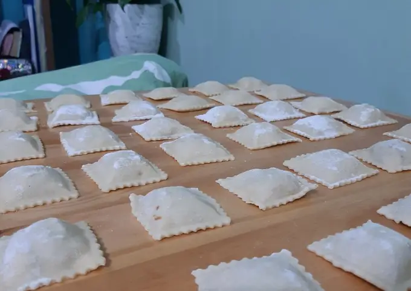

Ravioles

Unos ricos ravioles caseros para disfrutar en familia o con amigos
Se pueden hacer de verdura, carne, pollo o de lo que mas te guste!
Ingredientes:
- 300 gr harina
- 1/4 cdta sal
- 2 cdas aceite
- 1 huevo
- 100 ml agua tibia
Pasos:
- Comenzamos pesando los 300 gr de harina.
- En un bowl colocamos la harina, sal y hacemos una corona.
En el centro colocamos el huevo y el aceite.
- Le vamos agregando agua y amasamos hasta formar una masa.
Una vez echa la masa, dejamos reposar 10 minutos.
- Pasado los 10 minutos cortamos y estiramos
- Colocamos harina en un molde y le colocamos la masa, relleno y con ayuda de agua vamos poniendo la tapa de arriba.
- Desmoldamos
- Hervimos, preparamos una salsita a gusto y listo, a disfrutar!!!!